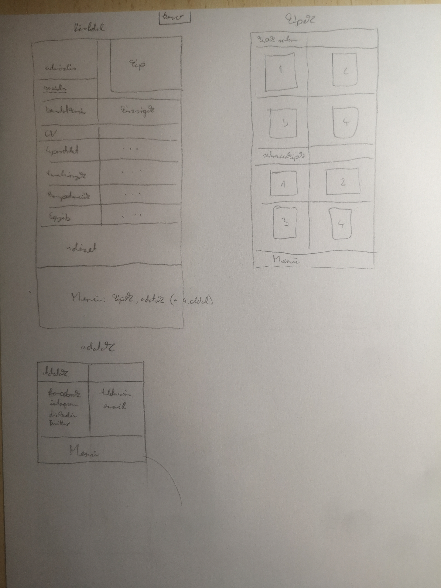

Grafikai terv |
|
|  | Szerencsére az elképzeléseimet nagyon nagy részt meg is tudtam valósítani, így nagyon hasonlít a végeredmény a tervekhez. Felmerülő nehézség az egyes kódok megkeresése volt az interneten,
de szerencsére ezek is sikerültek, ezeket az oldalakat lentebb listázom. Egy letisztult jól átlátható oldal létrehozása volt a cél így nem tettem bele semmilyen bonyolult rendszert, így ebben sem
volt semmilyen nehézség. Talán amin többet kellett gondolkozzak az a főoldalon kívüli másik két oldal funkciója. Először csak egy hosszabb oldalt szerettem volna készíteni az alján az elérhetőségekkel
és összesen egy darab képpel. Viszont a követelmények miatt ezt módosítanom kellett, így ez egy kisebb nehézséget okozott, de remélem így megfelelő lesz a 3 oldal. Összefoglalva, szerencsére semmilyen
nagyobb dolgot nem kellett megváltoztassak a tervben. |
Nézz körül! |
Portfolio |
Képek |
Adatok |